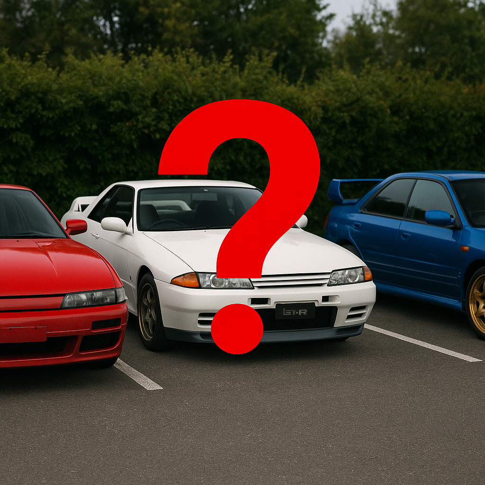

あなたのJDMはどれ？
あなたの個性やライフスタイルにぴったりのJDMカーは？今こそ発見の時！日本のカーカルチャーに飛び込み、いくつかの質問に答えるだけで理想のモデルが見つかるかもしれません。90年代の名車か、それともサーキット仕様のモンスターか？



あなたの個性やライフスタイルにぴったりのJDMカーは？今こそ発見の時！日本のカーカルチャーに飛び込み、いくつかの質問に答えるだけで理想のモデルが見つかるかもしれません。90年代の名車か、それともサーキット仕様のモンスターか？